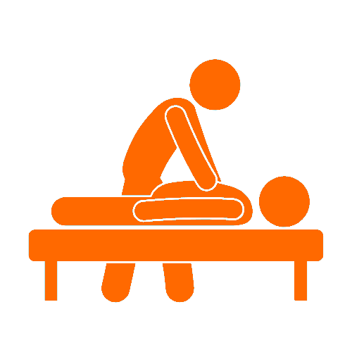
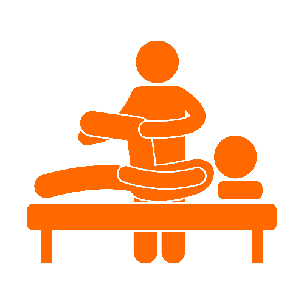
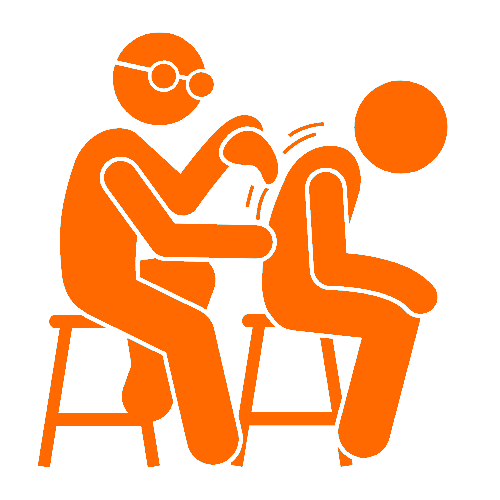
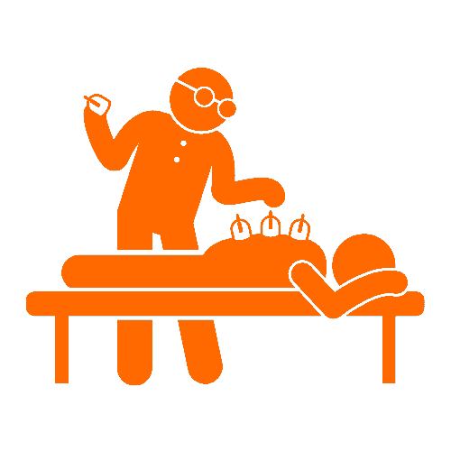
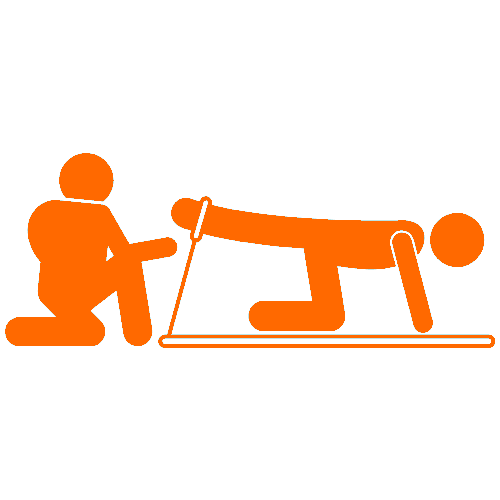
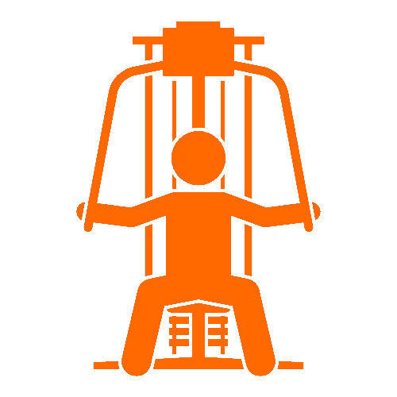
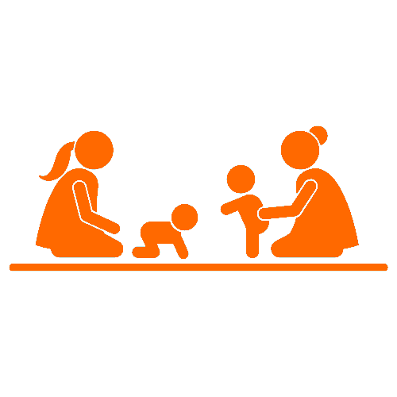
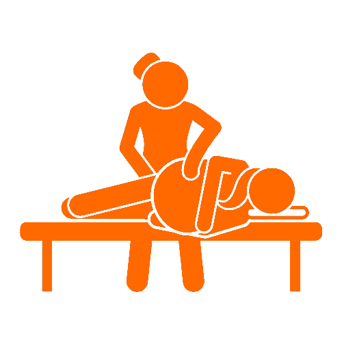

<section class="chiro-section">
  <div class="container">
    <p class="title-intro">How we can help</p>
    <h1 class="heading-primary">What our chiropractors offer</h1>
    <div class="grid-section grid grid--col-6">
      <div class="service">
        
        <h2 class="heading-tertiary">Chiropractic Adjustment</h2>

        <p class="service-info">
          The chiropractor will either adjust or mobilize the joints at the end
          of treatment. This occurs following the soft-tissue based massage.
        </p>
      </div>

      <div class="service">
        
        <h2 class="heading-tertiary">Soft Tissue Release</h2>

        <p class="service-info">
          Kelowna chiropractors perform soft tissue massage techniques prior to
          their adjustments to warm up the musculature before any joint
          alignment. This technique allows for better alignment and longer
          lasting results.
        </p>
      </div>

      <div class="service">
        
        <h2 class="heading-tertiary">Graston Technique</h2>

        <p class="service-info">
          This modality is a soft tissue mobilization that helps break down
          adhesions present in your musculoskeletal system. Once the adhesions
          are broken down, new strong soft tissue starts to build where there
          were calcifications and scar tissue.
        </p>
      </div>
      <div class="service">
        
        <h2 class="heading-tertiary">Cupping</h2>

        <p class="service-info">
          Used as a soft tissue modality, our chiropractors use cupping to
          reduce pain and relieve stress & tension for patients. It lifts the
          skin and underlying connective tissues to increase blood flow to the
          treated area. It is a great treatment for stiff and sore muscles.
        </p>
      </div>
      <div class="service">
        
        <h2 class="heading-tertiary">Custom Rehab Programs</h2>

        <p class="service-info">
          These programs can improve a patient’s quality of life by reinforcing
          correct movement patterns, and increasing overall strength. They are
          tailored rehab plans based on your injury, so you can help yourself at
          home between chiropractic treatments.
        </p>
      </div>
      <div class="service">
        
        <h2 class="heading-tertiary">Athletic Care</h2>

        <p class="service-info">
          Athletes can be more susceptible to sport injuries than others, and
          our chiropractors can offer exercise prescriptions, taping techniques,
          and various soft tissue techniques and modalities
        </p>
      </div>
      <div class="service">
        
        <h2 class="heading-tertiary">Pediatric Care</h2>

        <p class="service-info">
          Just like adults, children are faced with many stressors within our
          environment that can cause misalignment and tension in their bodies,
          so our chiropractors can help, at any age.
        </p>
      </div>
      <div class="service">
        
        <h2 class="heading-tertiary">Prenatal/Postnatal Care</h2>

        <p class="service-info">
          As a woman moves through her trimesters, chiropractic techniques help
          with common pregnancy related aches and pains, and our chiropractors
          effectively perform treatment on mothers pre and postpartum.
        </p>
      </div>
    </div>
  </div>
</section>
